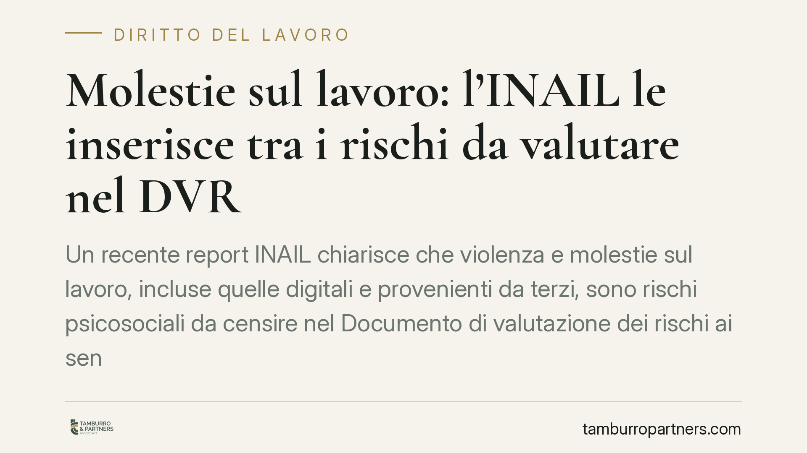

Molestie sul lavoro: l'INAIL le inserisce tra i rischi da valutare nel DVR
Un recente report INAIL chiarisce che violenza e molestie sul lavoro, incluse quelle digitali e provenienti da terzi, sono rischi psicosociali da censire nel Documento di valutazione dei rischi ai sensi dell'art. 28 D.lgs. 81/2008. Un inquadramento che amplia gli obblighi del datore e, in caso di inerzia, ne aggrava la responsabilità.

Il fatto
L'INAIL ha pubblicato un report che prende posizione su un tema spesso trascurato nella prevenzione aziendale: la violenza e le molestie sul lavoro. Il documento inquadra questi fenomeni come rischi psicosociali veri e propri, ossia fattori legati all'organizzazione del lavoro e alle relazioni interpersonali che possono incidere sulla salute fisica e mentale dei lavoratori.
La conseguenza operativa è netta: tali rischi vanno valutati e documentati nel DVR, il Documento di valutazione dei rischi. Non si tratta quindi di una questione lasciata alla sensibilità del singolo datore, ma di un adempimento che rientra pienamente negli obblighi di tutela previsti dalla normativa in materia di sicurezza.
Inquadramento normativo
Il riferimento è l'art. 28 del D.lgs. 81/2008 (Testo Unico sulla salute e sicurezza sul lavoro), che impone al datore di lavoro una valutazione di *tutti* i rischi per la sicurezza e la salute dei lavoratori. La norma parla espressamente di rischi collegati allo stress lavoro-correlato e alle condizioni particolari di determinati gruppi di lavoratori: è in questo perimetro che l'INAIL colloca violenza e molestie.
L'interpretazione dell'Istituto estende l'ambito a tre categorie oggi particolarmente rilevanti:
- la violenza di genere e le molestie sessuali;
- le molestie digitali (cyber-harassment, controllo ossessivo tramite strumenti aziendali, aggressioni via chat ed email);
- la violenza da terzi, cioè quella proveniente da soggetti esterni all'organizzazione come clienti, utenti, pazienti o fornitori.
Questa lettura si allinea anche alla Convenzione OIL n. 190 del 2019, ratificata dall'Italia, che per prima ha definito violenza e molestie nel mondo del lavoro in termini ampi, comprendendo sia gli episodi isolati sia i comportamenti reiterati.
Implicazioni pratiche
Per il datore di lavoro cambia la prospettiva. Finora, in molte realtà, il DVR trattava i rischi psicosociali in modo generico, limitandosi allo stress lavoro-correlato con questionari standardizzati. L'indicazione INAIL richiede un passo ulteriore: mappare specificamente le situazioni in cui violenza e molestie possono manifestarsi, individuarne le fonti e adottare misure di prevenzione mirate.
L'omessa o inadeguata valutazione espone a conseguenze precise. Un DVR carente può integrare una violazione degli obblighi di sicurezza, con sanzioni amministrative e penali a carico del datore e delle figure della prevenzione. Sul piano civilistico, inoltre, resta fermo l'art. 2087 del Codice civile, che impone all'imprenditore di adottare le misure necessarie a tutelare l'integrità fisica e la personalità morale dei lavoratori: la mancata gestione del rischio può fondare una responsabilità risarcitoria in caso di danno.
Il coinvolgimento non riguarda solo il vertice. RSPP (responsabile del servizio di prevenzione e protezione), medico competente e RLS (rappresentante dei lavoratori per la sicurezza) partecipano al processo valutativo, ciascuno secondo il proprio ruolo. I lavoratori, dal canto loro, devono poter contare su canali di segnalazione affidabili e protetti.
Cosa fare in concreto
- Aggiornate il DVR inserendo una sezione dedicata a violenza e molestie, con analisi delle fonti di rischio interne, digitali e da terzi.
- Adottate una procedura di segnalazione chiara, riservata e con tutela del segnalante da ritorsioni, coordinandola con l'eventuale sistema di whistleblowing.
- Coinvolgete le figure della prevenzione – RSPP, medico competente e RLS – nella valutazione e nella definizione delle misure, verbalizzando il processo.
- Formate dirigenti e preposti sul riconoscimento e sulla gestione dei comportamenti a rischio, includendo le dinamiche digitali.
- Definite misure organizzative concrete (codici di condotta, protocolli di intervento, monitoraggio periodico) e verificatene nel tempo l'efficacia.
Consigliamo di non trattare l'adeguamento come un mero esercizio documentale: l'efficacia delle misure, e non la loro semplice esistenza formale, è ciò che rileva in sede di controllo e di eventuale contenzioso.
---
*Contributo informativo a cura di Tamburro & Partners - Avv. Giuseppe Tamburro. Non costituisce parere legale.*
Ogni storia di lavoro ha i suoi tempi.
Se gestisci HR e vuoi un confronto su contenzioso, ispezioni o licenziamenti, scrivi allo studio. Ti rispondiamo entro un giorno lavorativo.